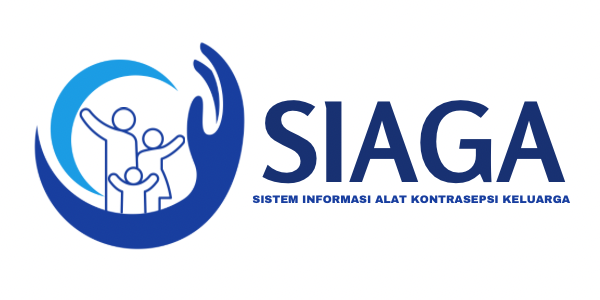

Selamat Datang di Program Keluarga Berencana
Sistem Informasi Alat Kontrasepsi Keluarga (SIAGA) akan membantu anda dalam memilih alat kontrasepsi yang tepat sebagai upaya untuk mengatur jarak kelahiran anak dan usia ideal melahirkan.
Informasi KB

KENALI PILIHANMU
JENIS ALAT KONTRASEPSI
1. Pil KB
2. Kondom
3. IUD (Intrauterine Device)
4. Suntik KB
5. Implan

UNTUNG KB
MANFAAT ALAT KONTRASEPSI
1. Mencegah kehamilan yang tidak direncanakan
2. Mengatur jarak kelahiran
3. Mengurangi risiko kematian ibu dan anak
4. Meningkatkan status kesehatan ibu dan anak
5. Mencegah penularan penyakit menular seksual
6. Membantu mengatasi migrain menstruasi